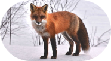

Le Renard roux
Saviez-vous que le Renard roux est l'un des carnivores les plus adaptés aux différents habitats du
Québec ? Avec son pelage rouge vif et ses oreilles pointues, il est non seulement agile, mais aussi un
chasseur rusé. Il utilise une méthode de chasse unique en sautant en hauteur pour attraper ses proies,
comme les rongeurs, et peut s'adapter à une large gamme de conditions climatiques. Ce renard est
souvent vu errant dans les champs et forêts, mais il s'approche aussi des zones urbaines à la
recherche de nourriture.